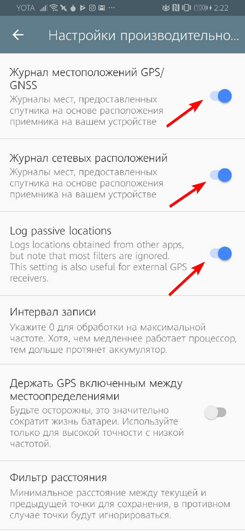

Включаем первые три пункта, листаем ниже, ставим 'Точность фильтрации' на 100 
Жмем "НАЧАТЬ ЗАПИСЬ"
так-же необходимо разрешить приложению работу в фоне и автозапуск
это делается в настройках самого устройства Huawei: Заходим в настройки смартфона (шестеренка вверху справа в шторке) в меню Настройки / Батарея / Запуск приложений.
Изначально вы увидите там активный переключатель “Управлять всем автоматически”.
Найдите GPS logger и кликните на него. Внизу появится окошко с тремя переключателями,
Выставляем все переключатели на 'Включено' Xiaomi: заходим в меню настроек, "Дополнительно" / "Батарея и производительность" / "Расход заряда батареи приложениями".
И здесь мы видим раздел "Режимы экономии энергии". По умолчанию тут активирован режим "Стандартный", Ставим 'Отключено'